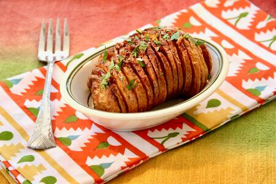

Air Fryer Hasselback Potatoes

Description
Hasselback potatoes were created at the Hotel Hasselbacken in Stockholm, Sweden in the 1940's, and they're still a popular side dish today. Not only are they delicious, and easy to make with lovely presentation, they take half the time to cook in an air fryer.
Ingredients
- 4 medium Yukon Gold potatoes
- 3 tablespoons melted butter
- 1 tablespoon olive oil
- 1/2 teaspoon ground paprika
- salt and ground black pepper to taste
- 1 tablespoons chopped fresh parsley
Steps
- Preheat an air fryer to 350 degrees F (175 degrees C).
- Slice evenly across entire length of each potato to make 1/4-inch or 1/2-inch slices, making sure the knife only cuts through to the bottom 1/2-inch, keeping the bottom of the potato intact.
- Combine butter, olive oil, garlic, and paprika in a small bowl. Brush some of the mixture over each potato and into the slits. Season with salt and pepper.
- Place potatoes in the air fryer basket and cook for 15 minutes. Brushing the potatoes again with butter mixture, making sure to get it down into the fanned out slices, to ensure the potatoes will not be dry. Cook until potatoes are cooked through, about 15 minutes more.
- Remove potatoes from the basket and brush with any remaining butter mixture. Sprinkle with chopped parsley and serve immediately.